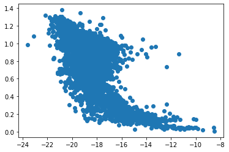
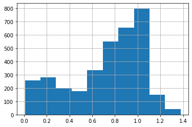

Boosting#
# !conda install -c anaconda py-xgboost
from sklearn.ensemble import AdaBoostClassifier, AdaBoostRegressor,\
GradientBoostingClassifier
import xgboost # You may need to install this!
import pandas as pd
import matplotlib as mpl
from sklearn.model_selection import train_test_split, cross_val_score, GridSearchCV
from sklearn.metrics import precision_score, recall_score, confusion_matrix
%matplotlib inline
Agenda#
SWBAT:
describe boosting algorithms;
implement boosting models with
sklearnand withXGBoost.
Intro#
One of the problems with using single decision trees and random forests is that, once I make a split, I can’t go back and consider how another feature varies across the whole dataset. But suppose I were to consider my tree’s errors. The fundamental idea of boosting is to start with a weak learner and then to use information about its errors to build a new model that can supplement the original model.
Two Types#
The two main types of boosting available in Scikit-Learn are adaptive boosting (AdaBoostClassifier, AdaBoostRegressor) and gradient boosting (GradientBoostingClassifier, GradientBoostingRegressor).
Again, the fundamental idea of boosting is to use a sequence of weak learners to build a model. Though the individual learners are weak, the idea is to train iteratively in order to produce a better predictor. More specifically, the first learner will be trained on the data as it stands, but future learners will be trained on modified versions of the data. The point of the modifications is to highlight the “hard-to-predict-accurately” portions of the data.
AdaBoost works by iteratively adapting two related series of weights, one attached to the datapoints and the other attached to the learners themselves. Datapoints that are incorrectly classified receive greater weights for the next learner in the sequence. That way, future learners will be more likely to focus on those datapoints. At the end of the sequence, the learners that make better predictions, especially on the datapoints that are more resistant to correct classification, receive more weight in the final “vote” that determines the ensemble’s prediction.
Suppose we have a binary classification problem and we represent the two classes with 1 and -1. (This is standard for describing the algorithm of AdaBoost.)
Then, in a nutshell:Train a weak learner.
Calculate its error \(\epsilon\).
Use that error as a weight on the classifier: \(\theta = \frac{1}{2}ln\left(\frac{1-\epsilon}{\epsilon}\right)\).
Note that \(\theta\) CAN be negative. This represents a classifier whose accuracy is worse than chance.Use that to adjust the data points’ weights: \(w_{n+1} = w_n\left(\frac{e^{\pm\theta}}{scaler}\right)\). Use \(+\theta\) for incorrect predictions, \(-\theta\) for correct predictions.
\(\rightarrow\) For more detail on AdaBoost, see here.
Gradient Boosting works instead by training each new learner on the residuals of the model built with the learners that have so far been constructed. That is, Model \(n+1\) (with \(n+1\) learners) will focus on the predictions of Model \(n\) (with only \(n\) learners) that were most off the mark. As the training process repeats, the learners learn and the residuals get smaller. I would get a sequence going:
Model 0 is very simple. Perhaps it merely predicts the mean:
\(\hat{y}_0 = \bar{y}\);
Model 1’s predictions would then be the sum of (i) Model 0’s predictions and (ii) the predictions of the model fitted to Model 0’s residuals:
\(\hat{y}_1 = \hat{y}_0 + \hat{(y - \hat{y})}_{err0}\);
Now iterate: Model 2’s predictions will be the sum of (i) Model 0’s predictions, (ii) the predictions of the model fitted to Model 0’s residuals, and (iii) the predictions of the model fitted to Model 1’s residuals:
\(\hat{y}_2 = \hat{y}_0 + \hat{(y - \hat{y})}_{err0} + \hat{(y - \hat{y})}_{err1}\)
Etc.
\(\rightarrow\) How does gradient boosting work for a classification problem? How do we even make sense of the notion of a gradient in that context? The short answer is that we appeal to the probabilities associated with the predictions for the various classes. See more on this topic here.
\(\rightarrow\) Why is this called “gradient boosting”? The short answer is that fitting a learner to a model’s residuals comes to the same thing as fitting it to the derivative of that model’s loss function. See more on this topic here.
Let’s illustrate gradient boosting now!
AdaBoost in Scikit-Learn#
galaxies = pd.read_csv('COMBO17.csv')
galaxies.head()
| Nr | Rmag | e.Rmag | ApDRmag | mumax | Mcz | e.Mcz | MCzml | chi2red | UjMAG | ... | UFS | e.UFS | BFS | e.BFS | VFD | e.VFD | RFS | e.RFS | IFD | e.IFD | |
|---|---|---|---|---|---|---|---|---|---|---|---|---|---|---|---|---|---|---|---|---|---|
| 0 | 6 | 24.995 | 0.097 | 0.935 | 24.214 | 0.832 | 0.036 | 1.400 | 0.64 | -17.67 | ... | 0.01870 | 0.00239 | 0.01630 | 0.00129 | 0.017300 | 0.00141 | 0.01650 | 0.000434 | 0.02470 | 0.00483 |
| 1 | 9 | 25.013 | 0.181 | -0.135 | 25.303 | 0.927 | 0.122 | 0.864 | 0.41 | -18.28 | ... | 0.00706 | 0.00238 | 0.00420 | 0.00115 | 0.003930 | 0.00182 | 0.00723 | 0.000500 | 0.00973 | 0.00460 |
| 2 | 16 | 24.246 | 0.054 | 0.821 | 23.511 | 1.202 | 0.037 | 1.217 | 0.92 | -19.75 | ... | 0.01260 | 0.00184 | 0.01830 | 0.00115 | 0.018800 | 0.00167 | 0.02880 | 0.000655 | 0.05700 | 0.00465 |
| 3 | 21 | 25.203 | 0.128 | 0.639 | 24.948 | 0.912 | 0.177 | 0.776 | 0.39 | -17.83 | ... | 0.01410 | 0.00186 | 0.01180 | 0.00110 | 0.009670 | 0.00204 | 0.01050 | 0.000416 | 0.01340 | 0.00330 |
| 4 | 26 | 25.504 | 0.112 | -1.588 | 24.934 | 0.848 | 0.067 | 1.330 | 1.45 | -17.69 | ... | 0.00514 | 0.00170 | 0.00102 | 0.00127 | 0.000039 | 0.00160 | 0.00139 | 0.000499 | 0.00590 | 0.00444 |
5 rows × 65 columns
This is a dataset about galaxies. The Mcz and MCzml columns are measures of redshift, which is our target. Mcz is usually understood to be a better measure, so that will be our target column. Many of the other columns have to do with various measures of galaxies’ magnitudes. For more on the dataset, see here.
galaxies.columns
Index(['Nr', 'Rmag', 'e.Rmag', 'ApDRmag', 'mumax', 'Mcz', 'e.Mcz', 'MCzml',
'chi2red', 'UjMAG', 'e.UjMAG', 'BjMAG', 'e.BjMAG', 'VjMAG', 'e.VjMAG',
'usMAG', 'e.usMAG', 'gsMAG', 'e.gsMAG', 'rsMAG', 'e.rsMAG', 'UbMAG',
'e.UbMAG', 'BbMAG', 'e.BbMAG', 'VnMAG', 'e.VbMAG', 'S280MAG',
'e.S280MA', 'W420FE', 'e.W420FE', 'W462FE', 'e.W462FE', 'W485FD',
'e.W485FD', 'W518FE', 'e.W518FE', 'W571FS', 'e.W571FS', 'W604FE',
'e.W604FE', 'W646FD', 'e.W646FD', 'W696FE', 'e.W696FE', 'W753FE',
'e.W753FE', 'W815FS', 'e.W815FS', 'W856FD', 'e.W856FD', 'W914FD',
'e.W914FD', 'W914FE', 'e.W914FE', 'UFS', 'e.UFS', 'BFS', 'e.BFS', 'VFD',
'e.VFD', 'RFS', 'e.RFS', 'IFD', 'e.IFD'],
dtype='object')
galaxies.isnull().sum().sum()
50
galaxies.info()
<class 'pandas.core.frame.DataFrame'>
RangeIndex: 3462 entries, 0 to 3461
Data columns (total 65 columns):
# Column Non-Null Count Dtype
--- ------ -------------- -----
0 Nr 3462 non-null int64
1 Rmag 3462 non-null float64
2 e.Rmag 3462 non-null float64
3 ApDRmag 3462 non-null float64
4 mumax 3462 non-null float64
5 Mcz 3462 non-null float64
6 e.Mcz 3462 non-null float64
7 MCzml 3462 non-null float64
8 chi2red 3462 non-null float64
9 UjMAG 3462 non-null float64
10 e.UjMAG 3462 non-null float64
11 BjMAG 3462 non-null float64
12 e.BjMAG 3462 non-null float64
13 VjMAG 3462 non-null float64
14 e.VjMAG 3462 non-null float64
15 usMAG 3462 non-null float64
16 e.usMAG 3462 non-null float64
17 gsMAG 3462 non-null float64
18 e.gsMAG 3462 non-null float64
19 rsMAG 3462 non-null float64
20 e.rsMAG 3462 non-null float64
21 UbMAG 3462 non-null float64
22 e.UbMAG 3462 non-null float64
23 BbMAG 3462 non-null float64
24 e.BbMAG 3462 non-null float64
25 VnMAG 3461 non-null float64
26 e.VbMAG 3461 non-null float64
27 S280MAG 3438 non-null float64
28 e.S280MA 3438 non-null float64
29 W420FE 3462 non-null float64
30 e.W420FE 3462 non-null object
31 W462FE 3462 non-null float64
32 e.W462FE 3462 non-null float64
33 W485FD 3462 non-null float64
34 e.W485FD 3462 non-null float64
35 W518FE 3462 non-null float64
36 e.W518FE 3462 non-null float64
37 W571FS 3462 non-null float64
38 e.W571FS 3462 non-null float64
39 W604FE 3462 non-null float64
40 e.W604FE 3462 non-null float64
41 W646FD 3462 non-null float64
42 e.W646FD 3462 non-null float64
43 W696FE 3462 non-null float64
44 e.W696FE 3462 non-null float64
45 W753FE 3462 non-null float64
46 e.W753FE 3462 non-null float64
47 W815FS 3462 non-null float64
48 e.W815FS 3462 non-null float64
49 W856FD 3462 non-null float64
50 e.W856FD 3462 non-null float64
51 W914FD 3462 non-null float64
52 e.W914FD 3462 non-null float64
53 W914FE 3462 non-null float64
54 e.W914FE 3462 non-null float64
55 UFS 3462 non-null float64
56 e.UFS 3462 non-null float64
57 BFS 3462 non-null float64
58 e.BFS 3462 non-null float64
59 VFD 3462 non-null float64
60 e.VFD 3462 non-null float64
61 RFS 3462 non-null float64
62 e.RFS 3462 non-null float64
63 IFD 3462 non-null float64
64 e.IFD 3462 non-null float64
dtypes: float64(63), int64(1), object(1)
memory usage: 1.7+ MB
galaxies = galaxies.dropna()
Let’s collect together the columns that have high correlation with Mcz, our target:
preds = []
for ind in galaxies.corr()['Mcz'].index:
if abs(galaxies.corr()['Mcz'][ind]) > 0.5:
preds.append(ind)
galaxies[preds].corr()
| Mcz | e.Mcz | MCzml | UjMAG | BjMAG | VjMAG | usMAG | gsMAG | rsMAG | UbMAG | BbMAG | VnMAG | S280MAG | |
|---|---|---|---|---|---|---|---|---|---|---|---|---|---|
| Mcz | 1.000000 | 0.613071 | 0.872016 | -0.699550 | -0.628226 | -0.641983 | -0.698304 | -0.652170 | -0.631398 | -0.699731 | -0.659506 | -0.641870 | -0.700453 |
| e.Mcz | 0.613071 | 1.000000 | 0.590179 | -0.170296 | -0.122309 | -0.122616 | -0.168326 | -0.126491 | -0.114022 | -0.170208 | -0.130680 | -0.122546 | -0.169344 |
| MCzml | 0.872016 | 0.590179 | 1.000000 | -0.565663 | -0.520006 | -0.532880 | -0.563591 | -0.536750 | -0.525495 | -0.565406 | -0.544325 | -0.532837 | -0.562474 |
| UjMAG | -0.699550 | -0.170296 | -0.565663 | 1.000000 | 0.933252 | 0.961088 | 0.999865 | 0.970124 | 0.954853 | 0.999986 | 0.975476 | 0.960981 | 0.963415 |
| BjMAG | -0.628226 | -0.122309 | -0.520006 | 0.933252 | 1.000000 | 0.950728 | 0.932328 | 0.954006 | 0.947597 | 0.932831 | 0.957836 | 0.950694 | 0.885382 |
| VjMAG | -0.641983 | -0.122616 | -0.532880 | 0.961088 | 0.950728 | 1.000000 | 0.959432 | 0.997956 | 0.999324 | 0.960265 | 0.992178 | 0.999997 | 0.894171 |
| usMAG | -0.698304 | -0.168326 | -0.563591 | 0.999865 | 0.932328 | 0.959432 | 1.000000 | 0.968971 | 0.953027 | 0.999903 | 0.974515 | 0.959320 | 0.964972 |
| gsMAG | -0.652170 | -0.126491 | -0.536750 | 0.970124 | 0.954006 | 0.997956 | 0.968971 | 1.000000 | 0.995436 | 0.969562 | 0.995887 | 0.997923 | 0.914118 |
| rsMAG | -0.631398 | -0.114022 | -0.525495 | 0.954853 | 0.947597 | 0.999324 | 0.953027 | 0.995436 | 1.000000 | 0.953909 | 0.988695 | 0.999341 | 0.882782 |
| UbMAG | -0.699731 | -0.170208 | -0.565406 | 0.999986 | 0.932831 | 0.960265 | 0.999903 | 0.969562 | 0.953909 | 1.000000 | 0.975035 | 0.960155 | 0.964189 |
| BbMAG | -0.659506 | -0.130680 | -0.544325 | 0.975476 | 0.957836 | 0.992178 | 0.974515 | 0.995887 | 0.988695 | 0.975035 | 1.000000 | 0.992127 | 0.925047 |
| VnMAG | -0.641870 | -0.122546 | -0.532837 | 0.960981 | 0.950694 | 0.999997 | 0.959320 | 0.997923 | 0.999341 | 0.960155 | 0.992127 | 1.000000 | 0.893972 |
| S280MAG | -0.700453 | -0.169344 | -0.562474 | 0.963415 | 0.885382 | 0.894171 | 0.964972 | 0.914118 | 0.882782 | 0.964189 | 0.925047 | 0.893972 | 1.000000 |
These various magnitude columns all have high correlations with one another! Let’s try a simple model with just the S280MAG column, since it has the highest correlation with Mcz.
x = galaxies['S280MAG']
y = galaxies['Mcz']
Since we only have one predictor, we can visualize the correlation with the target! We can also reshape it for modeling purposes!
x_rev = x.values.reshape(-1, 1)
mpl.pyplot.scatter(x_rev, y);

x_train, x_test, y_train, y_test = train_test_split(x_rev, y, random_state=42)
abr = AdaBoostRegressor(random_state=42)
abr.fit(x_train, y_train)
AdaBoostRegressor(random_state=42)
cross_val_score(abr, x_train, y_train, cv=5)
array([0.48891095, 0.42071752, 0.53158551, 0.51183824, 0.44177733])
Hyperparameter Tuning#
Let’s see if we can do better by trying different hyperparameter values:
gs = GridSearchCV(estimator=abr,
param_grid={
'n_estimators': [25, 50, 100],
'loss': ['linear', 'square']
}, cv=5)
gs.fit(x_train, y_train)
GridSearchCV(cv=5, estimator=AdaBoostRegressor(random_state=42),
param_grid={'loss': ['linear', 'square'],
'n_estimators': [25, 50, 100]})
gs.best_params_
{'loss': 'linear', 'n_estimators': 25}
XGBoost#
grad_boost = xgboost.XGBRegressor(random_state=42, objective='reg:squarederror')
grad_boost.fit(x_train, y_train)
XGBRegressor(base_score=0.5, booster='gbtree', colsample_bylevel=1,
colsample_bynode=1, colsample_bytree=1, gamma=0, gpu_id=-1,
importance_type='gain', interaction_constraints='',
learning_rate=0.300000012, max_delta_step=0, max_depth=6,
min_child_weight=1, missing=nan, monotone_constraints='()',
n_estimators=100, n_jobs=0, num_parallel_tree=1, random_state=42,
reg_alpha=0, reg_lambda=1, scale_pos_weight=1, subsample=1,
tree_method='exact', validate_parameters=1, verbosity=None)
cross_val_score(grad_boost, x_train, y_train, cv=5)
array([0.43487026, 0.39709885, 0.46508887, 0.47632543, 0.40770303])
Regression or Classification?#
What does my target look like?
galaxies['Mcz'].hist();

There seems to be a bit of a bimodal shape here. We might therefore try predicting whether the redshift factor is likely to be greater or less than 0.5:
galaxies['bool'] = galaxies['Mcz'] > 0.5
galaxies.tail()
| Nr | Rmag | e.Rmag | ApDRmag | mumax | Mcz | e.Mcz | MCzml | chi2red | UjMAG | ... | e.UFS | BFS | e.BFS | VFD | e.VFD | RFS | e.RFS | IFD | e.IFD | bool | |
|---|---|---|---|---|---|---|---|---|---|---|---|---|---|---|---|---|---|---|---|---|---|
| 3457 | 9990 | 24.962 | 0.186 | -0.113 | 25.189 | 0.960 | 0.190 | 0.951 | 0.89 | -18.21 | ... | 0.00170 | 0.00361 | 0.001150 | 0.00489 | 0.00147 | 0.00625 | 0.000413 | 0.00987 | 0.00323 | True |
| 3458 | 9992 | 21.918 | 0.017 | -0.562 | 23.063 | 0.770 | 0.031 | 0.766 | 0.90 | -20.47 | ... | 0.00218 | 0.04500 | 0.001310 | 0.05130 | 0.00173 | 0.07210 | 0.000542 | 0.10200 | 0.00477 | True |
| 3459 | 9995 | 23.701 | 0.051 | -0.437 | 24.053 | 0.775 | 0.121 | 1.330 | 0.60 | -18.76 | ... | 0.00223 | 0.01850 | 0.001090 | 0.01450 | 0.00182 | 0.01580 | 0.000468 | 0.01860 | 0.00484 | True |
| 3460 | 9996 | 23.473 | 0.098 | -1.114 | 25.075 | 0.926 | 0.087 | 0.870 | 1.01 | -19.67 | ... | 0.00225 | 0.00809 | 0.001190 | 0.01140 | 0.00166 | 0.01070 | 0.000454 | 0.01930 | 0.00390 | True |
| 3461 | 9997 | 25.621 | 0.298 | -0.224 | 25.488 | 0.968 | 0.139 | 0.957 | 1.13 | -17.70 | ... | 0.00165 | 0.00315 | 0.000949 | 0.00247 | 0.00131 | 0.00317 | 0.000426 | 0.00746 | 0.00415 | True |
5 rows × 66 columns
x_train2, x_test2, y_train2, y_test2 = train_test_split(x_rev, galaxies['bool'])
AdaBoost#
abc = AdaBoostClassifier(random_state=42)
abc.fit(x_train2, y_train2)
AdaBoostClassifier(random_state=42)
abc.score(x_test2, y_test2)
0.8790697674418605
precision_score(y_test2, abc.predict(x_test2))
0.8986784140969163
recall_score(y_test2, abc.predict(x_test2))
0.9459041731066461
GradientBoosting#
gbc = GradientBoostingClassifier(random_state=42)
gbc.fit(x_train2, y_train2)
GradientBoostingClassifier(random_state=42)
gbc.score(x_test2, y_test2)
0.8790697674418605
precision_score(y_test2, gbc.predict(x_test2))
0.8940493468795355
recall_score(y_test2, gbc.predict(x_test2))
0.9520865533230294
confusion_matrix(y_test2, gbc.predict(x_test2))
array([[140, 73],
[ 31, 616]])
XGBoost#
grad_boost_class = xgboost.XGBClassifier(random_state=42, objective='binary:logistic')
grad_boost_class.fit(x_train2, y_train2)
XGBClassifier(base_score=0.5, booster='gbtree', colsample_bylevel=1,
colsample_bynode=1, colsample_bytree=1, gamma=0, gpu_id=-1,
importance_type='gain', interaction_constraints='',
learning_rate=0.300000012, max_delta_step=0, max_depth=6,
min_child_weight=1, missing=nan, monotone_constraints='()',
n_estimators=100, n_jobs=0, num_parallel_tree=1, random_state=42,
reg_alpha=0, reg_lambda=1, scale_pos_weight=1, subsample=1,
tree_method='exact', validate_parameters=1, verbosity=None)
grad_boost_class.score(x_test2, y_test2)
0.877906976744186